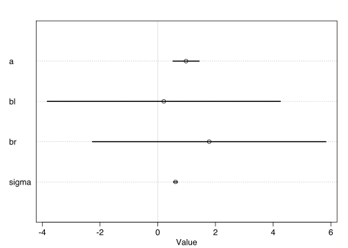
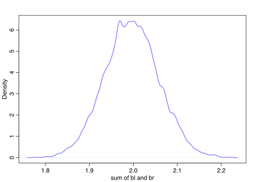
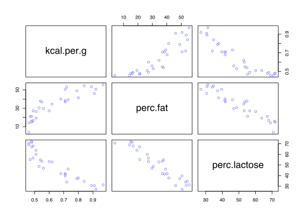
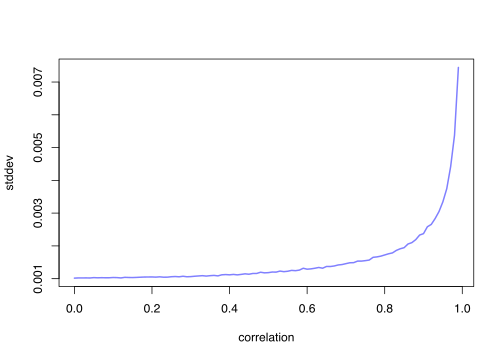

6.1 Multicollinearity
Means a very strong association between two or more predictors.
Consequence: the posterior distribution will seem to suggest that none of the variables is reliably associated with the outcome, even if all of the variables are in reality strongly associated with the outcome.
That said, the model will work fine for prediction; you will jsut be frustrated trying to understand it.
6.1.1 Multicollinear legs
Imagine trying to predict an individual’s height using the length of their legs as a predictor. But once you put both legs (right and left) into the model, something vexing will happen.
N <- 100 # number of individuals
set.seed(909)
height <- rnorm(N,10,2) # sim total height of each
leg_prop <- runif(N,0.4,0.5) # leg as proportion of height
leg_left <- leg_prop*height + # sim left leg as proportion + error
rnorm( N , 0 , 0.02 )
leg_right <- leg_prop*height + # sim right leg as proportion + error
rnorm( N , 0 , 0.02 )
# combine into data frame
d <- data.frame(height,leg_left,leg_right)We expect the beta coefficient that measures the association of a leg with height to end up around the average height (10) divided by 45% of the average height (4.5).
m6.1 <- quap(
alist(
height ~ dnorm( mu , sigma ) ,
mu <- a + bl*leg_left + br*leg_right ,
a ~ dnorm( 10 , 100 ) ,
bl ~ dnorm( 2 , 10 ) ,
br ~ dnorm( 2 , 10 ) ,
sigma ~ dexp( 1 )
) , data=d )
precis(m6.1)## mean sd 5.5% 94.5%
## a 0.9812791 0.28395540 0.5274635 1.4350947
## bl 0.2118585 2.52703706 -3.8268348 4.2505518
## br 1.7836774 2.53125061 -2.2617500 5.8291047
## sigma 0.6171026 0.04343427 0.5476862 0.6865189plot(precis(m6.1))
post <- extract.samples(m6.1)
plot( bl ~ br , post , col=col.alpha(rangi2,0.1) , pch=16 )
The posterior distribution for these two parameters is very hgihly correlated, with all of the plausible values of bl and br lying around a narrow ridge. When bl is large, then br must be small. Since both leg variables contain almost exactly the same information, if you insist on including both in a model, then there will be a practically infinite number of combinations of bl and br that produce the same predictions.
Compute the posterior distribution and plot it.
sum_blbr <- post$bl + post$br
dens( sum_blbr , col=rangi2 , lwd=2 , xlab="sum of bl and br" )
m6.2 <- quap(
alist(
height ~ dnorm( mu , sigma ) ,
mu <- a + bl*leg_left,
a ~ dnorm( 10 , 100 ) ,
bl ~ dnorm( 2 , 10 ) ,
sigma ~ dexp( 1 )
) , data=d )
precis(m6.2)## mean sd 5.5% 94.5%
## a 0.9979326 0.28364620 0.5446112 1.451254
## bl 1.9920676 0.06115704 1.8943269 2.089808
## sigma 0.6186038 0.04353998 0.5490185 0.688189The basic lesson is this: >When two predictor varilables are very strongly correlated (conditional on other variables int he model), including both in a model may lead to confusion.
6.1.2. Multicollinear milk
library(rethinking)
data(milk)
d <- milk
d$K <- rethinking::standardize( d$kcal.per.g )
d$F <- rethinking::standardize( d$perc.fat )
d$L <- rethinking::standardize( d$perc.lactose )# kcal.per.g regressed on perc.fat
m6.3 <- quap(
alist(
K ~ dnorm( mu , sigma ) ,
mu <- a + bF*F ,
a ~ dnorm( 0 , 0.2 ) ,
bF ~ dnorm( 0 , 0.5 ) ,
sigma ~ dexp( 1 )
) , data=d )
# kcal.per.g regressed on perc.lactose
m6.4 <- quap(
alist(
K ~ dnorm( mu , sigma ) ,
mu <- a + bL*L ,
a ~ dnorm( 0 , 0.2 ) ,
bL ~ dnorm( 0 , 0.5 ) ,
sigma ~ dexp( 1 )
) , data=d )
precis( m6.3 )## mean sd 5.5% 94.5%
## a 1.535526e-07 0.07725195 -0.1234634 0.1234637
## bF 8.618970e-01 0.08426088 0.7272318 0.9965621
## sigma 4.510179e-01 0.05870756 0.3571919 0.5448440precis( m6.4 )## mean sd 5.5% 94.5%
## a 7.438895e-07 0.06661633 -0.1064650 0.1064665
## bL -9.024550e-01 0.07132848 -1.0164517 -0.7884583
## sigma 3.804653e-01 0.04958259 0.3012227 0.4597078Given the strong association of each predictor with the outcome, we might conclude that both variables are reliable predictors of total energy in milk, across species. But watch what happens when we place both predictor variables in the same regression model:
m6.5 <- quap(
alist(
K ~ dnorm( mu , sigma ) ,
mu <- a + bF*F + bL*L ,
a ~ dnorm( 0 , 0.2 ) ,
bF ~ dnorm( 0 , 0.5 ) ,
bL ~ dnorm( 0 , 0.5 ) ,
sigma ~ dexp( 1 )
) ,
data=d )
precis( m6.5 )## mean sd 5.5% 94.5%
## a -3.172136e-07 0.06603577 -0.10553823 0.1055376
## bF 2.434983e-01 0.18357865 -0.04989579 0.5368925
## bL -6.780825e-01 0.18377670 -0.97179320 -0.3843719
## sigma 3.767418e-01 0.04918394 0.29813637 0.4553472Now the posterior means of both bF and bL are closer to zero. And the standard deviations for both parameters are twice as large as in the bivariate models (m6.3 and m6.4).
pairs( ~ kcal.per.g + perc.fat + perc.lactose , data=d , col=rangi2 )
Either helps in predicting kcal.per.g, but neither helps as much once you already know the other.
Some fields actually teach students to inspect pairwise correlations before fitting a model, to identify and drop highly correlated predictors. This is a mistake. Pairwise correlations are not the problem. It is the conditional associations—not correlations—that matter.
Now let’s see how the imprecision of the posterior increases with association between two predictors.
library(rethinking)
data(milk)
d <- milk
sim.coll <- function( r=0.9 ) {
d$x <- rnorm( nrow(d) , mean=r*d$perc.fat ,
sd=sqrt( (1-r^2)*var(d$perc.fat) ) )
m <- lm( kcal.per.g ~ perc.fat + x , data=d )
sqrt( diag( vcov(m) ) )[2] # stddev of parameter
}
rep.sim.coll <- function( r=0.9 , n=100 ) {
stddev <- replicate( n , sim.coll(r) )
mean(stddev)
}
r.seq <- seq(from=0,to=0.99,by=0.01)
stddev <- sapply( r.seq , function(z) rep.sim.coll(r=z,n=100) )
plot( stddev ~ r.seq , type="l" , col=rangi2, lwd=2 , xlab="correlation" )